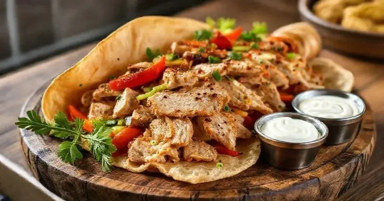

Aves · Frango
Sobrecoxa estilo shawarma

Ingredientes
- 600 g de sobrecoxa desossada
- 1 colher (sopa) de azeite
- Suco de meio limão
- 2 dentes de alho
- Páprica, cominho, cúrcuma, sal e pimenta
- Pão sírio para servir
Modo de preparo
- Descongele as sobrecoxas na geladeira.
- Tempere e deixe marinar por 30 minutos.
- Asse a 200 °C por aproximadamente 25–35 minutos, até atingir 74 °C no centro.
- Corte em tirinhas, divida em quatro porções e congele.
Observação
No dia: aqueça e monte no pão sírio com tomate e molho de iogurte com alho e limão.